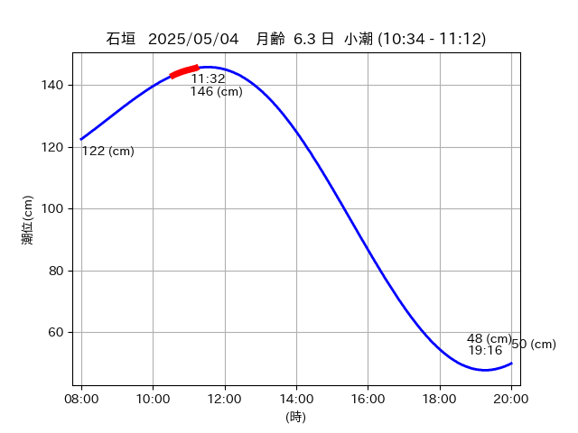
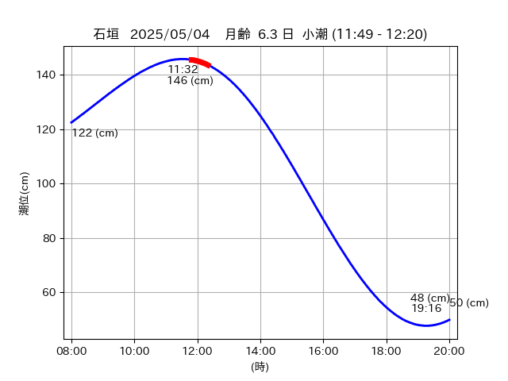
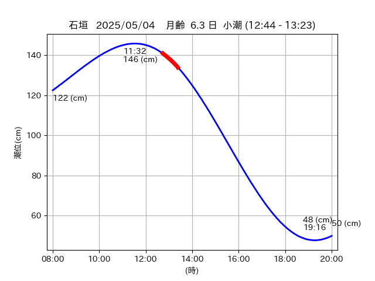

<!DOCTYPE html>
<html>
<head>
    
    <meta http-equiv="content-type" content="text/html; charset=UTF-8" />
    
        <script>
            L_NO_TOUCH = false;
            L_DISABLE_3D = false;
        </script>
    
    <style>html, body {width: 100%;height: 100%;margin: 0;padding: 0;}</style>
    <style>#map {position:absolute;top:0;bottom:0;right:0;left:0;}</style>
    <script src="https://cdn.jsdelivr.net/npm/leaflet@1.9.3/dist/leaflet.js"></script>
    <script src="https://code.jquery.com/jquery-3.7.1.min.js"></script>
    <script src="https://cdn.jsdelivr.net/npm/bootstrap@5.2.2/dist/js/bootstrap.bundle.min.js"></script>
    <script src="https://cdnjs.cloudflare.com/ajax/libs/Leaflet.awesome-markers/2.0.2/leaflet.awesome-markers.js"></script>
    <link rel="stylesheet" href="https://cdn.jsdelivr.net/npm/leaflet@1.9.3/dist/leaflet.css"/>
    <link rel="stylesheet" href="https://cdn.jsdelivr.net/npm/bootstrap@5.2.2/dist/css/bootstrap.min.css"/>
    <link rel="stylesheet" href="https://netdna.bootstrapcdn.com/bootstrap/3.0.0/css/bootstrap-glyphicons.css"/>
    <link rel="stylesheet" href="https://cdn.jsdelivr.net/npm/@fortawesome/fontawesome-free@6.2.0/css/all.min.css"/>
    <link rel="stylesheet" href="https://cdnjs.cloudflare.com/ajax/libs/Leaflet.awesome-markers/2.0.2/leaflet.awesome-markers.css"/>
    <link rel="stylesheet" href="https://cdn.jsdelivr.net/gh/python-visualization/folium/folium/templates/leaflet.awesome.rotate.min.css"/>
    
            <meta name="viewport" content="width=device-width,
                initial-scale=1.0, maximum-scale=1.0, user-scalable=no" />
            <style>
                #map_2a3c1bfad2bcecf7376982ac076096b6 {
                    position: relative;
                    width: 2048.0px;
                    height: 1600.0px;
                    left: 0.0%;
                    top: 0.0%;
                }
                .leaflet-container { font-size: 1rem; }
            </style>
        
</head>
<body>
    
    
            <div class="folium-map" id="map_2a3c1bfad2bcecf7376982ac076096b6" ></div>
        
</body>
<script>
    
    
            var map_2a3c1bfad2bcecf7376982ac076096b6 = L.map(
                "map_2a3c1bfad2bcecf7376982ac076096b6",
                {
                    center: [24.048, 123.75],
                    crs: L.CRS.EPSG3857,
                    ...{
  "zoom": 12,
  "zoomControl": true,
  "preferCanvas": false,
}

                }
            );

            

        
    
            var tile_layer_ff0f9295f4f00459a5189761f1603f79 = L.tileLayer(
                "https://cyberjapandata.gsi.go.jp/xyz/seamlessphoto/{z}/{x}/{y}.jpg",
                {
  "minZoom": 0,
  "maxZoom": 18,
  "maxNativeZoom": 18,
  "noWrap": false,
  "attribution": "\u5730\u7406\u9662\u5730\u56f3",
  "subdomains": "abc",
  "detectRetina": false,
  "tms": false,
  "opacity": 1,
}

            );
        
    
            tile_layer_ff0f9295f4f00459a5189761f1603f79.addTo(map_2a3c1bfad2bcecf7376982ac076096b6);
        
    
            var marker_28d7f03bfa6d341dc9ac6da4c765464b = L.marker(
                [24.0749, 123.721],
                {
}
            ).addTo(map_2a3c1bfad2bcecf7376982ac076096b6);
        
    
            var icon_10c6eef60512228d788cfd40fcf88891 = L.AwesomeMarkers.icon(
                {
  "markerColor": "orange",
  "iconColor": "white",
  "icon": "info-sign",
  "prefix": "glyphicon",
  "extraClasses": "fa-rotate-0",
}
            );
        
    
        var popup_e069b58c7b9b2c25cc3ab2f9515b7079 = L.popup({
  "maxWidth": "100%",
});

        
            
                var html_b5c0e9db3b80593886d153f154805de5 = $(`<div id="html_b5c0e9db3b80593886d153f154805de5" style="width: 100.0%; height: 100.0%;"><table><tr><td></td></tr><tr><td><center>20250504 No.1 </center></table></td></tr></table</div>`)[0];
                popup_e069b58c7b9b2c25cc3ab2f9515b7079.setContent(html_b5c0e9db3b80593886d153f154805de5);
            
        

        marker_28d7f03bfa6d341dc9ac6da4c765464b.bindPopup(popup_e069b58c7b9b2c25cc3ab2f9515b7079)
        ;

        
    
    
                marker_28d7f03bfa6d341dc9ac6da4c765464b.setIcon(icon_10c6eef60512228d788cfd40fcf88891);
            
    
            var poly_line_c7cc8aa8947f3415e9df24e2c3233158 = L.polyline(
                [[24.0749, 123.721], [24.0698, 123.7203]],
                {"bubblingMouseEvents": true, "color": "#00FFFF", "dashArray": null, "dashOffset": null, "fill": false, "fillColor": "#00FFFF", "fillOpacity": 0.2, "fillRule": "evenodd", "lineCap": "round", "lineJoin": "round", "noClip": false, "opacity": 1.0, "smoothFactor": 1.0, "stroke": true, "weight": 3}
            ).addTo(map_2a3c1bfad2bcecf7376982ac076096b6);
        
    
            var marker_834f5d4aae26d4b7de67d9f45837d750 = L.marker(
                [24.0749, 123.72],
                {
}
            ).addTo(map_2a3c1bfad2bcecf7376982ac076096b6);
        
    
            var icon_40d5d196958c34623683e381526db8aa = L.AwesomeMarkers.icon(
                {
  "markerColor": "orange",
  "iconColor": "white",
  "icon": "info-sign",
  "prefix": "glyphicon",
  "extraClasses": "fa-rotate-0",
}
            );
        
    
        var popup_302fddf3a35cb47608788138e1da285f = L.popup({
  "maxWidth": "100%",
});

        
            
                var html_1ac573595e8e837f17fd680b6cd57734 = $(`<div id="html_1ac573595e8e837f17fd680b6cd57734" style="width: 100.0%; height: 100.0%;"><table><tr><td></td></tr><tr><td><center>20250504 No.2 </center></table></td></tr></table</div>`)[0];
                popup_302fddf3a35cb47608788138e1da285f.setContent(html_1ac573595e8e837f17fd680b6cd57734);
            
        

        marker_834f5d4aae26d4b7de67d9f45837d750.bindPopup(popup_302fddf3a35cb47608788138e1da285f)
        ;

        
    
    
                marker_834f5d4aae26d4b7de67d9f45837d750.setIcon(icon_40d5d196958c34623683e381526db8aa);
            
    
            var poly_line_9da7553cd5f7ecefa86b00ef771dc611 = L.polyline(
                [[24.0749, 123.72], [24.07, 123.7207]],
                {"bubblingMouseEvents": true, "color": "#00FFFF", "dashArray": null, "dashOffset": null, "fill": false, "fillColor": "#00FFFF", "fillOpacity": 0.2, "fillRule": "evenodd", "lineCap": "round", "lineJoin": "round", "noClip": false, "opacity": 1.0, "smoothFactor": 1.0, "stroke": true, "weight": 3}
            ).addTo(map_2a3c1bfad2bcecf7376982ac076096b6);
        
    
            var marker_80f5885f51549b8e8ebeb20439d1cf00 = L.marker(
                [24.0504, 123.7374],
                {
}
            ).addTo(map_2a3c1bfad2bcecf7376982ac076096b6);
        
    
            var icon_a97e5552b30a584f64ff53aff0710588 = L.AwesomeMarkers.icon(
                {
  "markerColor": "orange",
  "iconColor": "white",
  "icon": "info-sign",
  "prefix": "glyphicon",
  "extraClasses": "fa-rotate-0",
}
            );
        
    
        var popup_b0e0d48ba8becd79051dd7bd426bbabf = L.popup({
  "maxWidth": "100%",
});

        
            
                var html_6b75514dfd6ab2ba52a1ca2f3ee6e18a = $(`<div id="html_6b75514dfd6ab2ba52a1ca2f3ee6e18a" style="width: 100.0%; height: 100.0%;"><table><tr><td></td></tr><tr><td><center>20250504 No.3 </center></table></td></tr></table</div>`)[0];
                popup_b0e0d48ba8becd79051dd7bd426bbabf.setContent(html_6b75514dfd6ab2ba52a1ca2f3ee6e18a);
            
        

        marker_80f5885f51549b8e8ebeb20439d1cf00.bindPopup(popup_b0e0d48ba8becd79051dd7bd426bbabf)
        ;

        
    
    
                marker_80f5885f51549b8e8ebeb20439d1cf00.setIcon(icon_a97e5552b30a584f64ff53aff0710588);
            
    
            var poly_line_1b77e6f6a0eac84ddfbe55c0b327773b = L.polyline(
                [[24.0504, 123.7374], [24.0508, 123.7349]],
                {"bubblingMouseEvents": true, "color": "#FF00FF", "dashArray": null, "dashOffset": null, "fill": false, "fillColor": "#FF00FF", "fillOpacity": 0.2, "fillRule": "evenodd", "lineCap": "round", "lineJoin": "round", "noClip": false, "opacity": 1.0, "smoothFactor": 1.0, "stroke": true, "weight": 3}
            ).addTo(map_2a3c1bfad2bcecf7376982ac076096b6);
        
    
            var marker_27bedc0f904d8f7fb91222aa388275fb = L.marker(
                [24.049, 123.7477],
                {
}
            ).addTo(map_2a3c1bfad2bcecf7376982ac076096b6);
        
    
            var icon_78b939cb95f1cc46bc4866077e027a3d = L.AwesomeMarkers.icon(
                {
  "markerColor": "orange",
  "iconColor": "white",
  "icon": "info-sign",
  "prefix": "glyphicon",
  "extraClasses": "fa-rotate-0",
}
            );
        
    
        var popup_83edab4e0460d13fb7ab1d4bbf500456 = L.popup({
  "maxWidth": "100%",
});

        
            
                var html_490f04167d649273c6ea96a7e5b3d4df = $(`<div id="html_490f04167d649273c6ea96a7e5b3d4df" style="width: 100.0%; height: 100.0%;"><table><tr><td></td></tr><tr><td><center>20250504 No.4 </center></table></td></tr></table</div>`)[0];
                popup_83edab4e0460d13fb7ab1d4bbf500456.setContent(html_490f04167d649273c6ea96a7e5b3d4df);
            
        

        marker_27bedc0f904d8f7fb91222aa388275fb.bindPopup(popup_83edab4e0460d13fb7ab1d4bbf500456)
        ;

        
    
    
                marker_27bedc0f904d8f7fb91222aa388275fb.setIcon(icon_78b939cb95f1cc46bc4866077e027a3d);
            
    
            var poly_line_2f2b779e0d60e91ea59c06335f80db28 = L.polyline(
                [[24.049, 123.7477], [24.0467, 123.7519]],
                {"bubblingMouseEvents": true, "color": "#00FFFF", "dashArray": null, "dashOffset": null, "fill": false, "fillColor": "#00FFFF", "fillOpacity": 0.2, "fillRule": "evenodd", "lineCap": "round", "lineJoin": "round", "noClip": false, "opacity": 1.0, "smoothFactor": 1.0, "stroke": true, "weight": 3}
            ).addTo(map_2a3c1bfad2bcecf7376982ac076096b6);
        
</script>
</html>